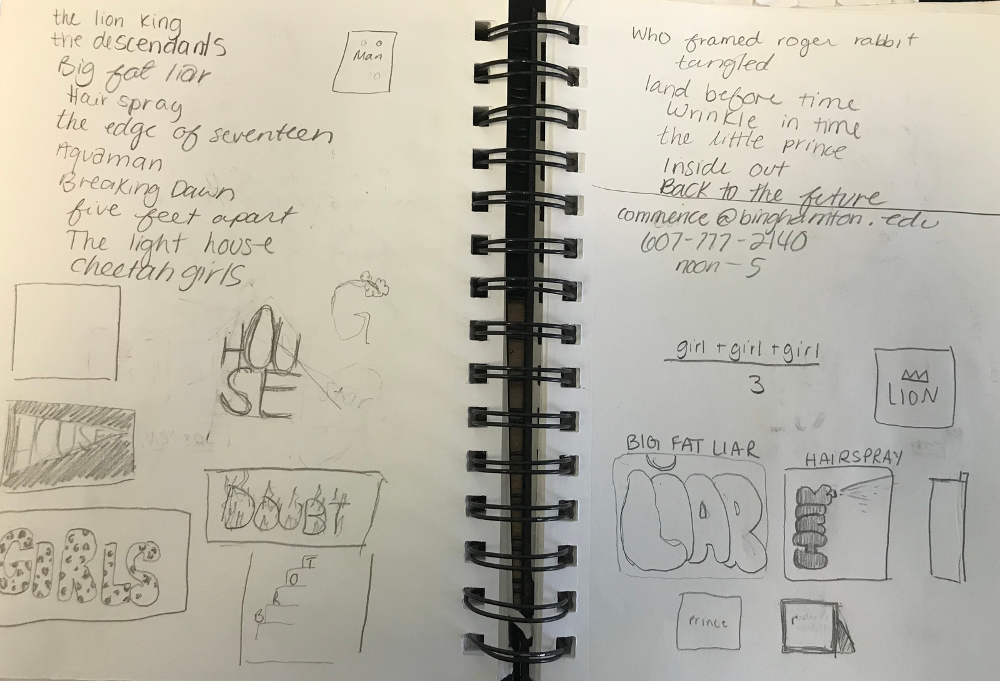
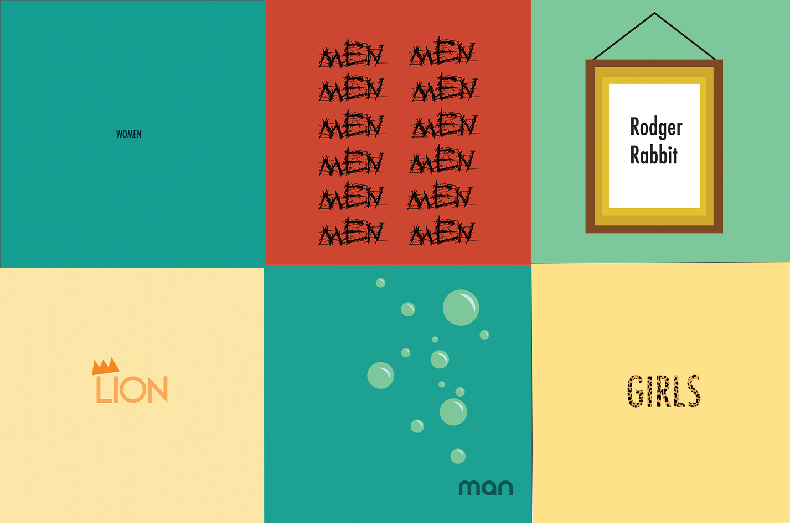
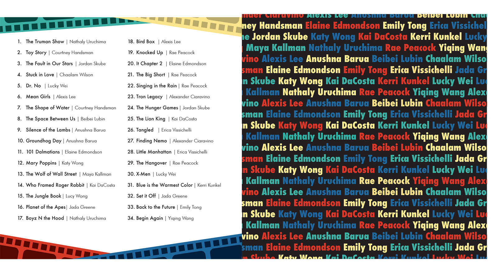
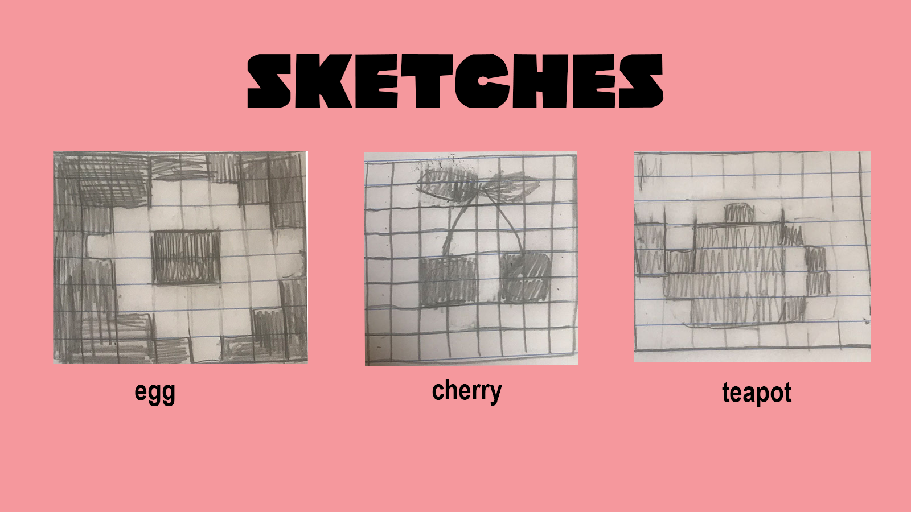
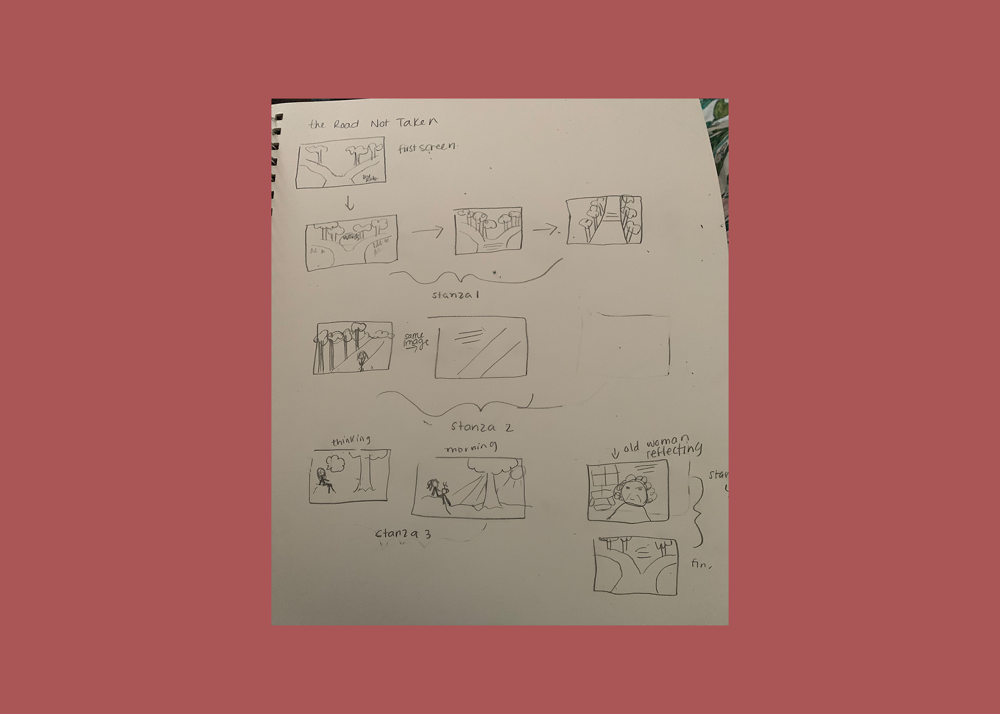
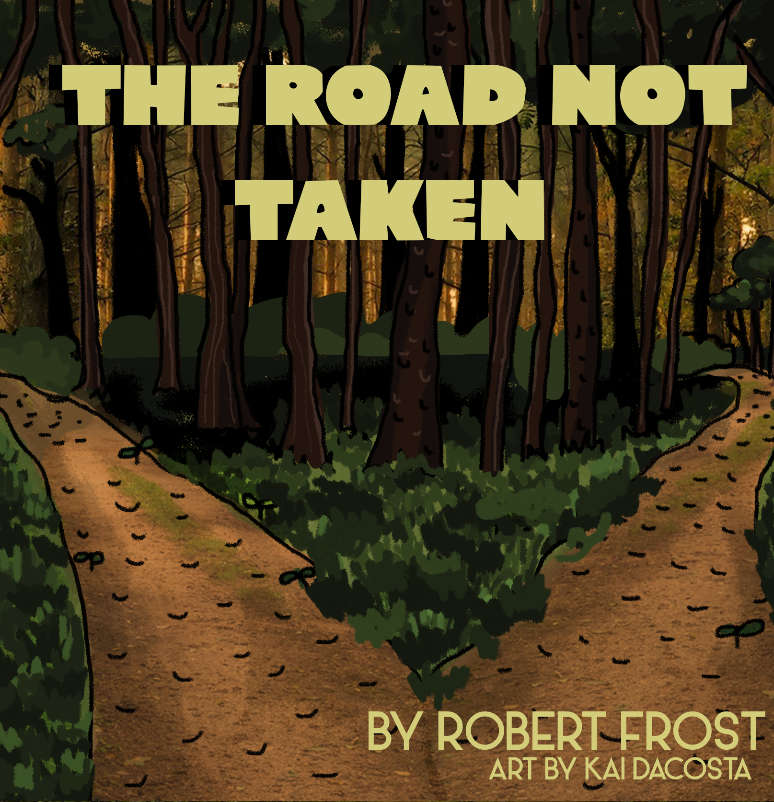

Hi! I'm Kai and I am currently a senior at Binghamton. I'm a Psych and Graphic Design double major, and I am currently enrolled in Kevin's software class. This blog will contain some of my works from throughout the semester.
Web Riddle Book Frost Poem

For this portion of the project, I began by researching various popular movies and I came up with a list of a bunch that I thought would look interesting when represented typographically. After I sketched out a few ideas and I ended up focusing on "Who Framed Roger Rabbit" and "Lion King." I tried not to use too many illustrations in my sketches because i wanted them to be simple, cute and straightforward.

These are some of my drafts for the riddle book. For the final project, I ended up going with roger rabbit, and lion king. Both of the final designs were edited to match the color scheme of the book.

For this part of the project, we created an online grid in order to post the pages of the book. Each person had to edit their images for publishing on photoshop, and then we edited the code and style of the page in Sublime.

For this project we had to create pixel art based on Susan Kare's Photoshop Icons. I decided to do an image of a cherry because they are one of my favorite fruits, and they remind me of summer and happiness.

For ths project I decided to do a webpage detailing the narrative of Robert Frost's "The Road Not Taken." I woulld like to make each page animated a bit so that you are taken on the journey as the poem progresses. I came up with this idea because school is coming to an end and there are decisions that have to be made that will impact your life depending on the choices you make.

I faced a few hurdles when designing ths project, the original plan was to create a walking animation using adobe after effects, but I ran out of time and I was having trouble figuring out how to use the software, so I decided to create gifs using photoshop. Designing and drawing a forest turned out to be harder than I thought, but I am happy with the results, and I got to mess around with photoshop (I havent dont that for a while I usually just use illustrator.) I really enjoyed this project, it was fun exploring all the different aspects of storytelling, and I learned a lot about software while doing it. This has been an incredibly enjoyable semester despite corona!